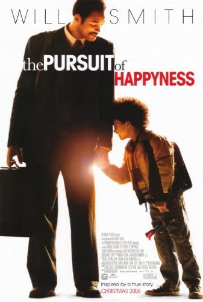

The Pursuit of Happyness

Summary:
Chris Gardner takes up an unpaid internship in a brokerage firm after he loses his life's earnings selling a product he invested in. His wife leaves him and he is left with the custody of his son.
Director:
Gabriele Muccino
Story by:
Steven Conrad
Cast:
Will Smith as Chris Gardner
A medical device salesman and concerned father
Jaden Christopher Syre Smith as Christopher Gardne
Thandie Newton as Linda Gardner